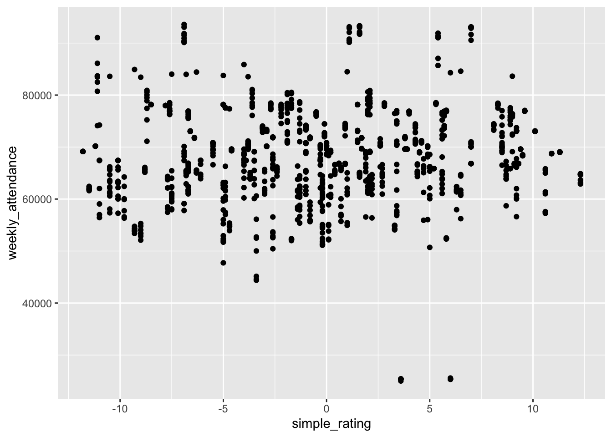
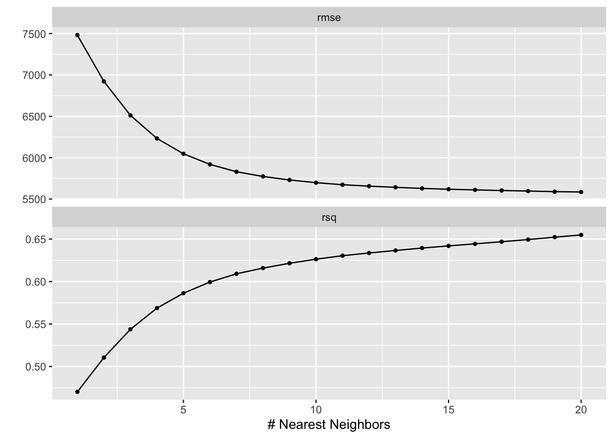

library(readr)
library(stringr)
library(tidyr)
library(dplyr)
library(kknn)
library(probably)
library(readxl)
library(janitor)
library(workflows)
library(workflowsets)
library(recipes)
library(rsample)
library(parsnip)
library(yardstick)
library(tune)
library(ggplot2)
library(tidymodels)
library(naniar)NFL Attendance
Motivation and Context
This section describes what you are investigating in your project and why you are investigating it. You should provide enough contextual background and information that someone with a limited background can understand the broad outlines of the topic being investigated.
I am investigating attendance at NFL games because it is interesting to delve into the many factors that play into why a person would go to a stadium rather than simply watch from home. The time of day, date, loyalty to a team, cost, and rivalries may all play a role. There are also other monetary reasons one should consider investigating future attendance. For instance, given a predicted increase, which isn’t possible due to stadium limitations, renovating stadiums for additional seats may become a priority. In addition, there are dynamic reasons, such as ticket prices and the number of staff, which can change depending on predicted attendance.
The background to understand NFL game attendance is the locations of stadiums and the popularity of teams. While how the game is played is interesting, it isn’t vital to the analysis as long as we know that higher scores are better. There is, however, a simple rating system where 0 is an average team, with above zero being better and below being worse, used to measure the quality of the teams’ offense, defense, and opponents. There is also a bye week for each team where they don’t play, and the data uses the outdated sixteen-game season with eight played at home and the other eight played away. Lastly, changes in team names and locations are important to consider.
Main Objective
The main objective of this project is to predict what the attendance per game would have been in the 2020 season if there wasn’t a COVID-19 restriction.
Packages Used In This Analysis
| Package | Use |
|---|---|
| [readr] | read in csv |
…
FINISH
Data Description
I am using data on attendance, scores, and other metrics for football teams’ games from 2000 to 2019. It is from a Tidy Tuesday from 02/04/2020, which is a community which posts weekly projects. The data is collected from Pro Football Reference which I am also using, and it was most likely collected through nfl.com as there is a game book which states the attendance as the data matches it. It also states the stadiums which would be useful to scrape and the dates and times are also most likely collected from their. The game book states it is paid attendance which is probably collected based on how many tickets are used to enter the stadium.
Tidy Tuesday https://github.com/rfordatascience/tidytuesday/tree/main/data/2020/2020-02-04
Pro Football Reference https://www.pro-football-reference.com/
NFL Website https://www.nfl.com/
attendance <- readr::read_csv('https://raw.githubusercontent.com/rfordatascience/tidytuesday/main/data/2020/2020-02-04/attendance.csv')
standings <- readr::read_csv('https://raw.githubusercontent.com/rfordatascience/tidytuesday/main/data/2020/2020-02-04/standings.csv')
games <- readr::read_csv('https://raw.githubusercontent.com/rfordatascience/tidytuesday/main/data/2020/2020-02-04/games.csv')
stadiums <- clean_names(read_excel(here::here("Final_Project_Data/Stadiums.xls")))
Attendance_2020 <- clean_names(read_excel(here::here("Final_Project_Data/2020Attendance.xls")))Data Limitations
There are many limitations, such as there not being recorded stadiums, stadium capacity, and the size of the city. There may also be bias in the way that attendance is recorded to make the league seem to have a better performance or for headlines. The methodology that follows also may not be applicable to other sports as the number of games may be vital to whether people attend a game, whether due to fatigue from too many games or better opportunities; however, due to similarities, college football may be applicable. In addition, preseason and playoff data aren’t included; however, the methodology that follows may be applicable to them.
Data Wrangling
Attendance_2020 <- Attendance_2020 %>%
mutate(across(starts_with("week_"), as.numeric)) %>%
pivot_longer(
cols = starts_with("week_"),
names_prefix = "week_",
names_to = "week",
values_to = "weekly_attendance"
)Warning: There were 9 warnings in `mutate()`.
The first warning was:
ℹ In argument: `across(starts_with("week_"), as.numeric)`.
Caused by warning:
! NAs introduced by coercion
ℹ Run `dplyr::last_dplyr_warnings()` to see the 8 remaining warnings.Attendance_2020$year <- 2020
Attendance_2020$home_team <- Attendance_2020$tm
Attendance_2020$week <- as.double(Attendance_2020$week)
attendance$newteam <- str_c(attendance$team, attendance$team_name, sep = " ", collapse = NULL)
standings$newteam <- str_c(standings$team, standings$team_name, sep = " ", collapse = NULL)
games$week <- as.numeric(games$week)Warning: NAs introduced by coerciongames <- games %>%
drop_na(week)
data <- games %>%
left_join(attendance, by = c("home_team" = "newteam", "year", "week"))
data <- data %>%
left_join(standings, by = c("home_team" = "newteam", "year", "team", "team_name"))
stadiums <- stadiums %>%
separate_rows(primary_team_s, sep = ",")
stadiums <- stadiums %>%
drop_na(primary_team_s)
stadiums <- stadiums %>%
rowwise() %>%
mutate(year = list(from:to)) %>%
unnest(year) %>%
select(-from, -to)
stadiums <- stadiums %>%
filter(year >= 2000)
stadiums <- stadiums %>%
filter(year <= 2020)
stadiums <- stadiums %>%
distinct(year, primary_team_s, .keep_all = TRUE)
data <- data %>%
left_join(stadiums, by = c("home_team" = "primary_team_s", "year"))data_train <- data %>%
filter(year != 2019)
data_test <- data %>%
filter(year == 2019)Exploratory Data Analysis
attendance %>%
miss_var_summary()# A tibble: 9 × 3
variable n_miss pct_miss
<chr> <int> <num>
1 weekly_attendance 638 5.88
2 team 0 0
3 team_name 0 0
4 year 0 0
5 total 0 0
6 home 0 0
7 away 0 0
8 week 0 0
9 newteam 0 0 count(attendance)/638 n
1 17This corresponds one-to-one to the fact that each team is given one week of the seventeen-week season as a bye week.
data_train %>%
summarize(
number = n(),
weekly_attendance_mean = mean(weekly_attendance, na.rm = TRUE),
weekly_attendance_sd = sd(weekly_attendance, na.rm = TRUE),
weekly_attendance_min = min(weekly_attendance, na.rm = TRUE),
weekly_attendance_q1 = quantile(weekly_attendance, 0.25, na.rm = TRUE),
weekly_attendance_median = median(weekly_attendance, na.rm = TRUE),
weekly_attendance_q3 = quantile(weekly_attendance, 0.75, na.rm = TRUE),
weekly_attendance_max = max(weekly_attendance, na.rm = TRUE)
)# A tibble: 1 × 8
number weekly_attendance_mean weekly_attendance_sd weekly_attendance_min
<int> <dbl> <dbl> <dbl>
1 4848 67609. 8897. 23127
# ℹ 4 more variables: weekly_attendance_q1 <dbl>,
# weekly_attendance_median <dbl>, weekly_attendance_q3 <dbl>,
# weekly_attendance_max <dbl>ggplot(data = data_train,
mapping = aes(x = weekly_attendance)
) +
geom_histogram(center = 57500,
binwidth = 5000)
ggplot(data = data_train,
mapping = aes(y = weekly_attendance)
) +
geom_boxplot()
Through the table, we can get the total number of values, mean, standard deviation, minimum, median, maximum, and the value at the \(25\%\) and \(75%\) of attendance in training data. Through the exact values, we notice that attendance is centered between 63,000 and 73,000 people. In addition, all the values are plausible, as there are no recorded negative or exceedingly high values. The histogram shows no large breaks between different recorded attendances, but as the values get more extreme, there are fewer recorded games with such attendance. The boxplot shows a large number of outliers.
data_train %>%
group_by(home_team) %>%
count()# A tibble: 34 × 2
# Groups: home_team [34]
home_team n
<chr> <int>
1 Arizona Cardinals 152
2 Atlanta Falcons 152
3 Baltimore Ravens 152
4 Buffalo Bills 152
5 Carolina Panthers 152
6 Chicago Bears 152
7 Cincinnati Bengals 152
8 Cleveland Browns 152
9 Dallas Cowboys 152
10 Denver Broncos 152
# ℹ 24 more rowsdata_train %>%
group_by(home_team) %>%
summarize(
number = n(),
weekly_attendance_mean = mean(weekly_attendance, na.rm = TRUE),
weekly_attendance_sd = sd(weekly_attendance, na.rm = TRUE),
weekly_attendance_min = min(weekly_attendance, na.rm = TRUE),
weekly_attendance_q1 = quantile(weekly_attendance, 0.25, na.rm = TRUE),
weekly_attendance_median = median(weekly_attendance, na.rm = TRUE),
weekly_attendance_q3 = quantile(weekly_attendance, 0.75, na.rm = TRUE),
weekly_attendance_max = max(weekly_attendance, na.rm = TRUE)
)# A tibble: 34 × 9
home_team number weekly_attendance_mean weekly_attendance_sd
<chr> <int> <dbl> <dbl>
1 Arizona Cardinals 152 56317. 12721.
2 Atlanta Falcons 152 67947. 6497.
3 Baltimore Ravens 152 70570. 779.
4 Buffalo Bills 152 67329. 7471.
5 Carolina Panthers 152 73177. 916.
6 Chicago Bears 152 62261. 2167.
7 Cincinnati Bengals 152 60196. 7078.
8 Cleveland Browns 152 69573. 4000.
9 Dallas Cowboys 152 77249. 13651.
10 Denver Broncos 152 76002. 894.
# ℹ 24 more rows
# ℹ 5 more variables: weekly_attendance_min <dbl>, weekly_attendance_q1 <dbl>,
# weekly_attendance_median <dbl>, weekly_attendance_q3 <dbl>,
# weekly_attendance_max <dbl>ggplot(data = data_train,
mapping = aes(
x = home_team,
y = weekly_attendance
)
) +
geom_boxplot() +
theme(axis.text.x = element_text(angle = 90, vjust = 0.5, hjust=1))
The table above displays the number of games recorded for each home_team as we want to see how many teams are recorded in our data and the names, as there have been teams in the NFL that have changed names. In addition, we can see that there are 152 games recorded for each team, except the Chargers, Rams, and Texans. However, the Chargers and Rams have 152 when adding their other name, leaving only the Texans with 16 home games missing. This makes sense as the Texans joined in the 2002 season.
Through our next table, we can get the total number of values, mean, standard deviation, minimum, median, maximum, and the value at the \(25\%\) and \(75%\) of attendance broken into teams in our training data. The table provides exact values, so we can see the extreme values from the following box plot. In the box plot, we can see different teams of varying centers and distributions. In addition, we can see that the Los Angeles Chargers and Arizona Cardinals both have a single extremely large attendance record, which is 84301 and 103467 people, respectively. It can also be seen that the Dallas Cowboys almost always have extremely high attendance compared to other teams. Therefore, due to the differences between teams, home_team is likely a significant predictor for weekly_attendance.
data_train2 <- data_train
data_train2$year <- as.factor(data_train$year)
data_train2$week <- as.factor(data_train$week)
ggplot(data = data_train2,
mapping = aes(
x = year,
y = weekly_attendance
)
) +
geom_boxplot()
ggplot(data = data_train,
mapping = aes(
x = day,
y = weekly_attendance
)
) +
geom_boxplot()ggplot(data = data_train2,
mapping = aes(
x = week,
y = weekly_attendance
)
) +
geom_boxplot()
ggplot(data = data_train,
mapping = aes(
x = simple_rating,
y = weekly_attendance
)
) +
geom_point()
ggplot(data = data_train,
mapping = aes(
x = time,
y = weekly_attendance
)
) +
geom_point()
The above plots show that attendance doesn’t change significantly based on the simple rating, day, week, or year the game is played; however, it is impacted by time, but since there are different time zones, it doesn’t make much sense to use.
More Data Wrangling
data_train <- data_train %>%
mutate(last_word = str_extract(home_team, "\\w+$")) %>%
mutate(home_team = ifelse(duplicated(last_word) | duplicated(last_word, fromLast = TRUE),
last_word,
home_team)) %>%
select(-last_word)
data_train <- data_train %>%
mutate(last_word = str_extract(away_team, "\\w+$")) %>%
mutate(away_team = ifelse(duplicated(last_word) | duplicated(last_word, fromLast = TRUE),
last_word,
away_team)) %>%
select(-last_word)
data_test <- data_test %>%
mutate(last_word = str_extract(home_team, "\\w+$")) %>%
mutate(home_team = ifelse(duplicated(last_word) | duplicated(last_word, fromLast = TRUE),
last_word,
home_team)) %>%
select(-last_word)
data_test <- data_test %>%
mutate(last_word = str_extract(away_team, "\\w+$")) %>%
mutate(away_team = ifelse(duplicated(last_word) | duplicated(last_word, fromLast = TRUE),
last_word,
away_team)) %>%
select(-last_word)
Attendance_2020 <- Attendance_2020 %>%
mutate(last_word = str_extract(home_team, "\\w+$")) %>%
mutate(home_team = ifelse(duplicated(last_word) | duplicated(last_word, fromLast = TRUE),
last_word,
home_team)) %>%
select(-last_word)Modeling
I am performing a k-nearest neighbors as assumptions for linear regression has failed the condition of equal variance. K-nearest-neighbors is non-parametric so it has looser conditions and works by using the training set to identify the k points closest to the point we want to predict. Then an average is taken in order to make our prediction.
lm1 <- lm(weekly_attendance ~ home_team + away_team + week + year, data = data_train)
summary(lm1)
Call:
lm(formula = weekly_attendance ~ home_team + away_team + week +
year, data = data_train)
Residuals:
Min 1Q Median 3Q Max
-37346 -1504 504 2706 47171
Coefficients:
Estimate Std. Error t value Pr(>|t|)
(Intercept) -129383.93 32213.38 -4.016 6.00e-05 ***
home_teamBears -6831.61 709.36 -9.631 < 2e-16 ***
home_teamBengals -8722.95 714.63 -12.206 < 2e-16 ***
home_teamBills -1815.88 714.15 -2.543 0.011031 *
home_teamBroncos 7113.37 713.17 9.974 < 2e-16 ***
home_teamBrowns 647.62 714.51 0.906 0.364781
home_teamBuccaneers -7159.81 707.19 -10.124 < 2e-16 ***
home_teamCardinals -12601.05 704.10 -17.897 < 2e-16 ***
home_teamChargers -9251.53 712.84 -12.978 < 2e-16 ***
home_teamChiefs 5889.38 713.07 8.259 < 2e-16 ***
home_teamColts -7077.63 713.90 -9.914 < 2e-16 ***
home_teamCowboys 8484.63 707.90 11.986 < 2e-16 ***
home_teamDolphins -454.53 714.33 -0.636 0.524612
home_teamEagles -556.37 708.78 -0.785 0.432512
home_teamFalcons -813.02 707.52 -1.149 0.250567
home_teamGiants 9716.43 708.13 13.721 < 2e-16 ***
home_teamJaguars -5998.42 713.77 -8.404 < 2e-16 ***
home_teamJets 8951.72 713.97 12.538 < 2e-16 ***
home_teamLions -6874.56 708.46 -9.703 < 2e-16 ***
home_teamPackers 2450.67 708.61 3.458 0.000548 ***
home_teamPanthers 4254.78 707.01 6.018 1.90e-09 ***
home_teamPatriots -1559.39 714.18 -2.183 0.029051 *
home_teamRaiders -13554.55 713.24 -19.004 < 2e-16 ***
home_teamRams -5861.87 704.93 -8.316 < 2e-16 ***
home_teamRavens 1719.06 714.82 2.405 0.016215 *
home_teamRedskins 11531.61 708.03 16.287 < 2e-16 ***
home_teamSaints 749.63 708.59 1.058 0.290147
home_teamSeahawks -1941.52 703.81 -2.759 0.005827 **
home_teamSteelers -6611.24 714.95 -9.247 < 2e-16 ***
home_teamTexans 2195.99 734.53 2.990 0.002807 **
home_teamTitans -729.68 714.16 -1.022 0.306961
home_teamVikings -6311.00 708.00 -8.914 < 2e-16 ***
away_teamBears 639.80 709.57 0.902 0.367279
away_teamBengals -1103.98 714.67 -1.545 0.122477
away_teamBills -718.37 714.30 -1.006 0.314611
away_teamBroncos 845.37 712.79 1.186 0.235681
away_teamBrowns -1095.87 714.53 -1.534 0.125171
away_teamBuccaneers -438.23 707.20 -0.620 0.535504
away_teamCardinals -1426.36 704.53 -2.025 0.042967 *
away_teamChargers -413.54 713.00 -0.580 0.561935
away_teamChiefs -769.12 712.78 -1.079 0.280622
away_teamColts 360.48 713.06 0.506 0.613203
away_teamCowboys 1858.33 708.11 2.624 0.008709 **
away_teamDolphins 313.49 713.89 0.439 0.660587
away_teamEagles 165.44 708.10 0.234 0.815277
away_teamFalcons -287.35 707.35 -0.406 0.684584
away_teamGiants 92.66 708.35 0.131 0.895930
away_teamJaguars -1393.94 713.71 -1.953 0.050867 .
away_teamJets 264.98 714.76 0.371 0.710857
away_teamLions -14.71 708.22 -0.021 0.983426
away_teamPackers 1597.61 708.77 2.254 0.024238 *
away_teamPanthers -1183.20 707.23 -1.673 0.094393 .
away_teamPatriots 1696.47 714.49 2.374 0.017617 *
away_teamRaiders 316.53 713.02 0.444 0.657115
away_teamRams -558.76 704.94 -0.793 0.428033
away_teamRavens -497.19 714.62 -0.696 0.486622
away_teamRedskins -843.03 707.52 -1.192 0.233507
away_teamSaints -218.67 708.06 -0.309 0.757463
away_teamSeahawks -387.10 703.95 -0.550 0.582412
away_teamSteelers 1679.34 714.90 2.349 0.018862 *
away_teamTexans -1167.05 734.27 -1.589 0.112037
away_teamTitans -397.90 714.00 -0.557 0.577355
away_teamVikings 312.70 707.69 0.442 0.658604
week -60.65 17.56 -3.454 0.000558 ***
year 99.01 16.03 6.177 7.08e-10 ***
---
Signif. codes: 0 '***' 0.001 '**' 0.01 '*' 0.05 '.' 0.1 ' ' 1
Residual standard error: 6093 on 4783 degrees of freedom
Multiple R-squared: 0.5372, Adjusted R-squared: 0.531
F-statistic: 86.75 on 64 and 4783 DF, p-value: < 2.2e-16plot(lm1)


knn_recipe <- recipe(
weekly_attendance ~ home_team + away_team + week + year,
data = data_train
) |>
step_normalize(all_numeric_predictors()) |>
step_dummy(all_nominal_predictors(), one_hot = TRUE)
knn_model <- nearest_neighbor(mode = "regression",
engine = "kknn",
neighbors = tune(),
dist_power = 2)
knn_wflow <- workflow() |>
add_model(knn_model)
data_cv <- vfold_cv(data_train, v = 10)
knn.grid <- expand.grid(neighbors = seq(1,20, by = 1))
knn_wflow <- knn_wflow |>
add_recipe(knn_recipe)
knn_tune <- tune_grid(knn_model,
knn_recipe,
resamples = data_cv,
grid = knn.grid)
autoplot(knn_tune)
knn_best <- knn_tune |>
select_best(metric = "rmse")
knn_best# A tibble: 1 × 2
neighbors .config
<dbl> <chr>
1 14 Preprocessor1_Model14my_best_knn <- knn_wflow |>
finalize_workflow(parameters = knn_best)
my_best_knn══ Workflow ════════════════════════════════════════════════════════════════════
Preprocessor: Recipe
Model: nearest_neighbor()
── Preprocessor ────────────────────────────────────────────────────────────────
2 Recipe Steps
• step_normalize()
• step_dummy()
── Model ───────────────────────────────────────────────────────────────────────
K-Nearest Neighbor Model Specification (regression)
Main Arguments:
neighbors = 14
dist_power = 2
Computational engine: kknn I choose my best model based on the lowest root mean squared error, which we want to minimize as it is calculated as \(\sqrt{\frac{1}{n}\sum_{i=1}^n(y_i-\hat{f}(x_i))^2}\). This is the square root of one over the total number of observations times the sum over the observations of the actual values minus the predicted values squared. Therefore, when the root mean squared error is closer to 0, the actual values are closer to the predicted values.
Insights
best_model_refit <- my_best_knn |>
fit_resamples(
resamples = data_cv,
# save the cross-validated predictions
control = control_resamples(save_pred = TRUE)
)
predictions_best_model <- best_model_refit |>
collect_predictions()
cal_plot_regression(
predictions_best_model,
truth = weekly_attendance,
estimate = .pred
)
best_model_refit |>
cal_validate_linear(
save_pred = TRUE,
smooth = TRUE) |> # nonlinear smoothing, use smooth = FALSE for linear transformation
collect_predictions() |>
cal_plot_regression(
truth = weekly_attendance,
estimate = .pred
)
calibrate_knn <- predictions_best_model |>
# instructions for post-processing
cal_estimate_linear(
truth = weekly_attendance,
smooth = TRUE # nonlinear smoothing
)
knn_fit <- my_best_knn |> fit(
data = data_train
)
knn_test_pred2 <- knn_fit |>
augment(new_data = data_test) |>
# apply the post-processing
cal_apply(calibrate_knn)
clean <- knn_test_pred2 %>%
select(.pred, year, week, home_team, away_team, weekly_attendance)
clean$difference <- (clean$.pred-clean$weekly_attendance)
clean %>%
sort_by(clean$difference)# A tibble: 256 × 7
.pred year week home_team away_team weekly_attendance difference
<dbl> <dbl> <dbl> <chr> <chr> <dbl> <dbl>
1 62074. 2019 9 Jaguars Texans 84771 -22697.
2 66843. 2019 8 Rams Bengals 83720 -16877.
3 59573. 2019 11 Chargers Chiefs 76252 -16679.
4 59817. 2019 6 Rams 49ers 75695 -15878.
5 77358. 2019 10 Cowboys Vikings 91188 -13830.
6 77406. 2019 15 Cowboys Rams 90436 -13030.
7 77633. 2019 3 Cowboys Dolphins 90127 -12494.
8 79623. 2019 13 Cowboys Bills 90445 -10822.
9 61450. 2019 14 Rams Seahawks 71501 -10051.
10 83113. 2019 5 Cowboys Packers 93024 -9911.
# ℹ 246 more rowsOur test set of 2019 data shows that our model isn’t that great at predicting attendance, except for attendance between 60,000 and 80,000. In fact, it seems to be based on luck. Therefore, since our model isn’t great at predicting the 2019 data we can’t and won’t move onto 2020 data until we get better results.
Limitations and Future Work
The model is poorly predicting games with attendance that don’t fall between 60,000 and 80,000 attendants. This is likely due to a majority of values being there for use in k-nearest neighbors, while further values have less similar options. The data collection and analysis would be significantly improved if stadium data were readily available in a precleaned way. In addition, rivalries between teams could be another indicator of attendance. Since I am using a non-parametric approach, the assumptions are satisfied. There are some ethical concerns, such as if there is a great prediction, then teams might hire fewer workers during low attendance games, and ticket prices might be raised on high attendance games.
Reflection
This project has made me appreciate the difficulty of working with online data and how many of the methods we learned in class have to examined and thought about before being applied to projects.